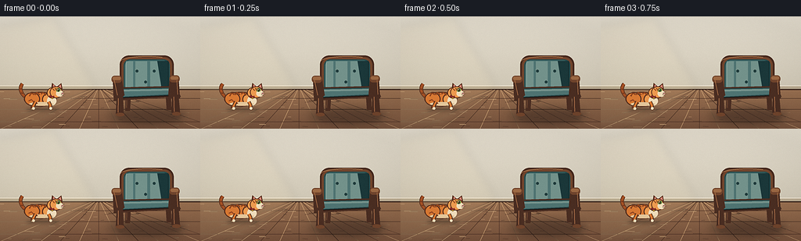
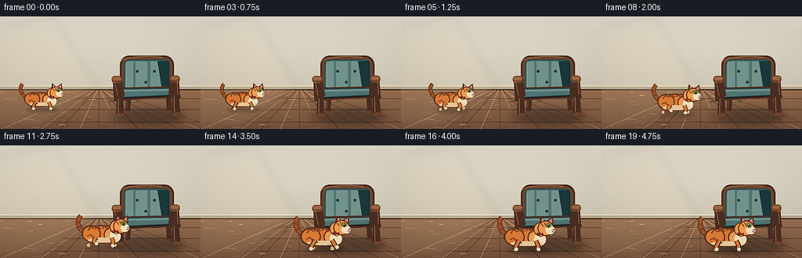
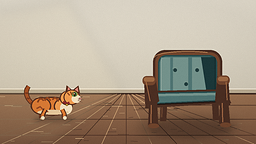
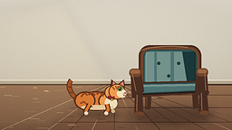
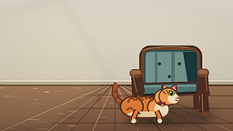

CODING AGENTS AS PIXEL WORLD MODELS
traex/DeepSeek-V4.1-Flash · dynamic_spatial_relationship_0006
点击播放 · 原生 RGB 像素
逐轮保存的候选
回放视频、检查图与代码变化。
每份候选均可单独播放。实际图片检查记录在下方工具轨迹中。
候选 01播放与检查图
点击播放 · 原生 RGB 像素

展开代码变化
--- 上一保存版本
+++ 本次保存版本
@@ -0,0 +1,408 @@
+from __future__ import annotations
+
+import math
+from pathlib import Path
+
+import numpy as np
+from PIL import Image, ImageDraw, ImageFilter
+
+import artifact_io
+
+
+CASE_DIR = Path(__file__).resolve().parent
+WIDTH, HEIGHT = 256, 144
+FRAMES, FPS = 20, 4.0
+SS = 4
+W, H = WIDTH * SS, HEIGHT * SS
+
+
+def rgb(value: str) -> tuple[int, int, int]:
+ value = value.lstrip("#")
+ return tuple(int(value[i : i + 2], 16) for i in (0, 2, 4))
+
+
+WALL_TOP = rgb("#e5decf")
+WALL_BOTTOM = rgb("#cfc7b5")
+FLOOR_TOP = rgb("#9b7252")
+FLOOR_BOTTOM = rgb("#76523c")
+WOOD_DARK = rgb("#4b2e22")
+WOOD = rgb("#71452d")
+WOOD_LIGHT = rgb("#9b6843")
+TEAL_DARK = rgb("#294c4d")
+TEAL = rgb("#4f7472")
+TEAL_LIGHT = rgb("#73928b")
+ORANGE_DARK = rgb("#a65327")
+ORANGE = rgb("#db7b35")
+ORANGE_LIGHT = rgb("#ef9b50")
+CREAM = rgb("#f2dfbd")
+INK = rgb("#3a261c")
+
+
+def sc(value: float) -> int:
+ return int(round(value * SS))
+
+
+def pt(x: float, y: float) -> tuple[int, int]:
+ return sc(x), sc(y)
+
+
+def box(x0: float, y0: float, x1: float, y1: float) -> tuple[int, int, int, int]:
+ return sc(x0), sc(y0), sc(x1), sc(y1)
+
+
+def line(draw: ImageDraw.ImageDraw, points, fill, width=1.0):
+ draw.line([pt(x, y) for x, y in points], fill=fill, width=max(1, sc(width)), joint="curve")
+
+
+def smoothstep(value: float) -> float:
+ value = max(0.0, min(1.0, value))
+ return value * value * (3.0 - 2.0 * value)
+
+
+def cubic_points(p0, p1, p2, p3, count=24):
+ result = []
+ for index in range(count + 1):
+ t = index / count
+ u = 1.0 - t
+ x = u**3 * p0[0] + 3 * u**2 * t * p1[0] + 3 * u * t**2 * p2[0] + t**3 * p3[0]
+ y = u**3 * p0[1] + 3 * u**2 * t * p1[1] + 3 * u * t**2 * p2[1] + t**3 * p3[1]
+ result.append((x, y))
+ return result
+
+
+def make_background() -> Image.Image:
+ y = np.arange(H, dtype=np.float32)[:, None] / (H - 1)
+ wall_mix = np.clip(y / 0.65, 0, 1)
+ wall = np.zeros((H, W, 3), dtype=np.float32)
+ for channel in range(3):
+ wall[:, :, channel] = (
+ WALL_TOP[channel] * (1.0 - wall_mix) + WALL_BOTTOM[channel] * wall_mix
+ )
+
+ floor_mix = np.clip((y - 0.63) / 0.37, 0, 1)
+ floor = np.zeros((H, W, 3), dtype=np.float32)
+ for channel in range(3):
+ floor[:, :, channel] = (
+ FLOOR_TOP[channel] * (1.0 - floor_mix) + FLOOR_BOTTOM[channel] * floor_mix
+ )
+
+ floor_mask = np.arange(H)[:, None] >= sc(92)
+ image = np.where(floor_mask[:, :, None], floor, wall)
+ rng = np.random.default_rng(19)
+ image += rng.normal(0, 1.3, (H, W, 1))
+ image = np.clip(image, 0, 255).astype(np.uint8)
+ result = Image.fromarray(image).convert("RGBA")
+ draw = ImageDraw.Draw(result, "RGBA")
+
+ # The baseboard gives the room a firm horizon and separates wall from floor.
+ draw.rectangle(box(0, 88.5, 256, 93.5), fill=rgb("#b9aa91") + (255,))
+ draw.rectangle(box(0, 88.5, 256, 89.3), fill=rgb("#eee5d3") + (220,))
+ draw.rectangle(box(0, 93.0, 256, 94.2), fill=(65, 44, 34, 100))
+
+ # Subtle floor boards converge gently toward the room's center.
+ vanish = (126.0, 87.0)
+ bottom_positions = [-25, 28, 77, 126, 177, 228, 281]
+ for index, bottom_x in enumerate(bottom_positions):
+ start_x = vanish[0] + (bottom_x - vanish[0]) * 0.075
+ line(draw, [(start_x, 94), (bottom_x, 144)], (72, 47, 35, 42), 0.55)
+ if index < len(bottom_positions) - 1:
+ next_x = bottom_positions[index + 1]
+ shade_x = (bottom_x + next_x) * 0.5
+ line(draw, [(vanish[0] + (shade_x - vanish[0]) * 0.075, 94), (shade_x, 144)],
+ (224, 181, 132, 22), 0.5)
+
+ for y_line in (105, 119, 135):
+ draw.line([pt(0, y_line), pt(256, y_line)], fill=(70, 44, 33, 34), width=sc(0.55))
+
+ floor_rng = np.random.default_rng(81)
+ for _ in range(52):
+ x = floor_rng.uniform(0, 256)
+ y0 = floor_rng.uniform(96, 142)
+ length = floor_rng.uniform(3, 12)
+ tone = (61, 40, 30, 18) if floor_rng.random() < 0.5 else (225, 186, 139, 16)
+ line(draw, [(x, y0), (x + length, y0 + floor_rng.uniform(-0.5, 0.5))], tone, 0.45)
+
+ # Warm light from the upper left keeps the mostly neutral room dimensional.
+ glow = Image.new("RGBA", (W, H), (0, 0, 0, 0))
+ glow_draw = ImageDraw.Draw(glow, "RGBA")
+ glow_draw.polygon(
+ [pt(0, 12), pt(68, 0), pt(123, 90), pt(54, 143), pt(0, 143)],
+ fill=(255, 229, 172, 20),
+ )
+ glow = glow.filter(ImageFilter.GaussianBlur(sc(5)))
+ result = Image.alpha_composite(result, glow)
+ return result
+
+
+def add_soft_shadow(image: Image.Image, ellipse, color, blur, opacity):
+ layer = Image.new("RGBA", (W, H), (0, 0, 0, 0))
+ draw = ImageDraw.Draw(layer, "RGBA")
+ draw.ellipse(box(*ellipse), fill=color + (opacity,))
+ layer = layer.filter(ImageFilter.GaussianBlur(sc(blur)))
+ return Image.alpha_composite(image, layer)
+
+
+def draw_chair(image: Image.Image) -> Image.Image:
+ image = add_soft_shadow(image, (139, 116, 237, 139), (53, 36, 28), 5.2, 74)
+ image = add_soft_shadow(image, (149, 120, 231, 136), (45, 30, 24), 2.2, 68)
+ draw = ImageDraw.Draw(image, "RGBA")
+
+ # Rear legs sit behind the upholstery.
+ draw.polygon([pt(161, 89), pt(168, 89), pt(166, 121), pt(160, 121)], fill=WOOD_DARK)
+ draw.polygon([pt(211, 89), pt(218, 89), pt(219, 120), pt(213, 120)], fill=WOOD_DARK)
+ line(draw, [(162.5, 91), (161.5, 117)], (112, 73, 50, 180), 1.0)
+
+ # Upright back, with a walnut rim around the teal cushion.
+ draw.rounded_rectangle(box(153, 50, 222, 101), radius=sc(12), fill=WOOD_DARK)
+ draw.rounded_rectangle(box(155.2, 52.2, 219.8, 98.8), radius=sc(10), fill=WOOD)
+ draw.rounded_rectangle(box(158, 55, 217, 97), radius=sc(8), fill=TEAL_DARK)
+ draw.rounded_rectangle(box(159.5, 56.5, 215.5, 95.5), radius=sc(7), fill=TEAL)
+
+ # Soft upholstery light and shaded side.
+ for x0, x1, alpha in ((161, 170, 28), (173, 188, 18), (192, 207, 12)):
+ draw.rectangle(box(x0, 57.5, x1, 94.5), fill=TEAL_LIGHT + (alpha,))
+ draw.polygon([pt(201, 57), pt(215, 57), pt(215, 95), pt(207, 95)],
+ fill=(27, 56, 58, 72))
+ line(draw, [(161, 59), (161, 91), (164, 95)], (147, 170, 160, 105), 0.8)
+ line(draw, [(215, 58), (215, 94), (211, 96)], (19, 43, 44, 150), 1.0)
+
+ # Tufting and piping make the chair read at a glance.
+ for x, y in ((175, 70), (197, 70), (186, 84)):
+ draw.ellipse(box(x - 1.8, y - 1.8, x + 1.8, y + 1.8), fill=(35, 63, 63, 210))
+ draw.arc(box(x - 3.0, y - 3.0, x + 2.2, y + 2.2), 205, 330,
+ fill=(124, 151, 140, 125), width=sc(0.55))
+ draw.line([pt(161, 91.5), pt(184, 94.0), pt(213, 92.0)],
+ fill=(185, 194, 168, 100), width=sc(0.65))
+
+ # Seat is a shallow perspective slab.
+ draw.polygon([pt(148, 91), pt(225, 89), pt(231, 103), pt(145, 108)], fill=WOOD_DARK)
+ draw.polygon([pt(150, 92.5), pt(223, 91), pt(226, 100.5), pt(148, 104.5)], fill=TEAL_DARK)
+ draw.polygon([pt(151.5, 93.7), pt(221, 92.4), pt(223.5, 99.5), pt(149.5, 103.0)], fill=TEAL)
+ draw.polygon([pt(151.5, 93.7), pt(221, 92.4), pt(221, 95.0), pt(151.5, 96.3)],
+ fill=TEAL_LIGHT + (38,))
+ draw.line([pt(148.5, 104.5), pt(226, 101)], fill=(34, 25, 21, 220), width=sc(1.6))
+
+ # Arms and front legs form the chair's foreground silhouette.
+ draw.polygon([pt(144, 78), pt(155, 76), pt(159, 101), pt(151, 108), pt(145, 104)],
+ fill=WOOD_DARK)
+ draw.rounded_rectangle(box(142.5, 76, 155.5, 85), radius=sc(4), fill=WOOD)
+ draw.rounded_rectangle(box(143.8, 77.2, 154.2, 81.5), radius=sc(2), fill=WOOD_LIGHT)
+ draw.polygon([pt(217, 76), pt(228, 78), pt(230, 105), pt(223, 108), pt(215, 101)],
+ fill=WOOD_DARK)
+ draw.rounded_rectangle(box(216.5, 75.5, 229.5, 84.5), radius=sc(4), fill=WOOD)
+ draw.rounded_rectangle(box(218, 76.8, 228, 81), radius=sc(2), fill=WOOD_LIGHT)
+
+ draw.polygon([pt(149, 103), pt(157, 102), pt(158, 125), pt(151, 128), pt(148, 125)],
+ fill=WOOD_DARK)
+ draw.polygon([pt(220, 101), pt(228, 100), pt(230, 124), pt(223, 127), pt(219, 123)],
+ fill=WOOD_DARK)
+ line(draw, [(151, 105), (150.8, 123)], (161, 105, 70, 140), 1.0)
+ line(draw, [(222, 103), (222.5, 122)], (161, 105, 70, 125), 1.0)
+ draw.ellipse(box(148, 123.5, 159, 128), fill=WOOD)
+ draw.ellipse(box(220, 122.5, 231, 127), fill=WOOD)
+
+ # Small wood highlights keep the frame from flattening into one dark shape.
+ draw.arc(box(154, 51, 222, 64), 182, 305, fill=(188, 134, 88, 155), width=sc(0.85))
+ line(draw, [(146, 82), (150, 101)], (172, 113, 72, 100), 0.7)
+ line(draw, [(226, 82), (227, 100)], (172, 113, 72, 80), 0.65)
+ return image
+
+
+def cat_transform(cx: float, base_y: float, scale: float, angle: float):
+ cos_a, sin_a = math.cos(angle), math.sin(angle)
+
+ def transform(u: float, v: float) -> tuple[float, float]:
+ x = cx + scale * (u * cos_a - v * sin_a)
+ y = base_y + scale * (u * sin_a + v * cos_a)
+ return x, y
+
+ return transform
+
+
+def draw_leg(draw, transform, anchor, knee, foot, scale, near=True):
+ points = [transform(*anchor), transform(*knee), transform(*foot)]
+ outline = rgb("#4a291c") if near else rgb("#5b3322")
+ fill = ORANGE if near else ORANGE_DARK
+ line(draw, points, outline, 5.2 * scale)
+ line(draw, points, fill, 3.25 * scale)
+ px, py = transform(foot[0] + 1.0, foot[1] - 0.2)
+ radius = 2.25 * scale
+ draw.ellipse((sc(px - radius), sc(py - radius), sc(px + radius), sc(py + radius)),
+ fill=CREAM if near else rgb("#d6b984"),
+ outline=rgb("#563222"))
+
+
+def draw_cat(image: Image.Image, cx: float, base_y: float, scale: float,
+ phase: float, running: float, sway: float) -> Image.Image:
+ # Shadow stays on the floor while the body lifts and settles with the gait.
+ shadow = Image.new("RGBA", (W, H), (0, 0, 0, 0))
+ shadow_draw = ImageDraw.Draw(shadow, "RGBA")
+ shadow_draw.ellipse(
+ box(cx - 24 * scale, base_y - 1.8 * scale, cx + 23 * scale, base_y + 4.0 * scale),
+ fill=(42, 29, 23, 78),
+ )
+ shadow = shadow.filter(ImageFilter.GaussianBlur(sc(2.4)))
+ image = Image.alpha_composite(image, shadow)
+
+ draw = ImageDraw.Draw(image, "RGBA")
+ bob = 0.9 * running * abs(math.sin(phase))
+ angle = 0.025 * running * math.sin(phase)
+ tr = cat_transform(cx, base_y - bob, scale, angle)
+
+ def local_line(points, fill, width):
+ line(draw, [tr(x, y) for x, y in points], fill, width * scale)
+
+ def local_ellipse(cx0, cy0, rx, ry, fill, outline=None, width=0.0):
+ p0 = tr(cx0 - rx, cy0 - ry)
+ p1 = tr(cx0 + rx, cy0 + ry)
+ draw.ellipse(box(p0[0], p0[1], p1[0], p1[1]), fill=fill,
+ outline=outline, width=max(1, sc(width * scale)) if outline else 0)
+
+ # Tail is drawn first, curling behind the body and rising above the back.
+ tail = cubic_points(
+ (-19, -13),
+ (-29, -16),
+ (-37, -28 + sway),
+ (-30 + sway * 0.7, -36 + sway * 0.3),
+ 28,
+ )
+ local_line(tail, rgb("#5a301e"), 5.5)
+ local_line(tail, ORANGE_DARK, 3.7)
+ for index in (8, 14, 20):
+ x, y = tail[index]
+ local_line([(x - 1.2, y - 0.2), (x + 1.5, y + 0.4)], rgb("#7c3d20"), 2.0)
+
+ # Gait offsets. Opposite limbs alternate while the body advances.
+ back_swing = 5.2 * running * math.sin(phase)
+ back2_swing = 5.2 * running * math.sin(phase + math.pi)
+ front_swing = 5.7 * running * math.sin(phase + math.pi * 0.72)
+ front2_swing = 5.7 * running * math.sin(phase + math.pi * 1.72)
+ back_lift = max(0.0, math.sin(phase)) * 2.8 * running
+ back2_lift = max(0.0, math.sin(phase + math.pi)) * 2.8 * running
+ front_lift = max(0.0, math.sin(phase + math.pi * 0.72)) * 3.3 * running
+ front2_lift = max(0.0, math.sin(phase + math.pi * 1.72)) * 3.3 * running
+
+ # Far legs.
+ draw_leg(draw, tr, (-12, -10), (-16 + back2_swing * 0.25, -4.5 - back2_lift * 0.35),
+ (-16 + back2_swing, -back2_lift), scale, near=False)
+ draw_leg(draw, tr, (8, -10), (10 + front2_swing * 0.22, -4.5 - front2_lift * 0.35),
+ (10 + front2_swing, -front2_lift), scale, near=False)
+
+ # Body, rump, chest, and cream underside.
+ local_ellipse(-4, -13.5, 23.8, 10.7, rgb("#57301f"))
+ local_ellipse(-4, -13.5, 22.3, 9.2, ORANGE)
+ local_ellipse(-16, -14.0, 11.4, 10.0, rgb("#5a311f"))
+ local_ellipse(-16, -14.0, 10.0, 8.5, ORANGE)
+ local_ellipse(9, -13.4, 10.4, 9.3, rgb("#5a311f"))
+ local_ellipse(9, -13.4, 9.0, 7.9, ORANGE_LIGHT)
+ local_ellipse(12.5, -11.4, 6.8, 7.0, CREAM)
+ local_ellipse(-2.5, -6.6, 17.8, 2.7, rgb("#e8c99c"))
+
+ # Back stripes follow the body contour rather than reading as flat spots.
+ for start, control, end in (
+ ((-20, -18), (-17, -23), (-13, -20)),
+ ((-12, -20), (-9, -24), (-5, -20)),
+ ((-3, -21), (0, -24), (4, -19)),
+ ((6, -20), (8, -23), (11, -17)),
+ ):
+ stripe = cubic_points(start, control, control, end, 9)
+ local_line(stripe, rgb("#8f451f"), 2.0)
+ local_line([(-21, -11), (-17, -13), (-14, -10)], rgb("#9a4a24"), 1.7)
+ local_line([(-15, -7), (-11, -9), (-8, -7)], rgb("#9a4a24"), 1.5)
+
+ # Near legs overlap the body and carry the strongest gait read.
+ draw_leg(draw, tr, (-11, -10), (-14 + back_swing * 0.25, -4.2 - back_lift * 0.35),
+ (-15 + back_swing, -back_lift), scale, near=True)
+ draw_leg(draw, tr, (8, -10), (10.5 + front_swing * 0.22, -4.2 - front_lift * 0.35),
+ (10 + front_swing, -front_lift), scale, near=True)
+
+ # Ears sit behind the head, with warm inner-ear shapes.
+ left_ear = [tr(12.0, -29.5), tr(13.0, -37.2), tr(20.5, -30.8)]
+ right_ear = [tr(19.0, -31.0), tr(26.5, -37.0), tr(28.0, -28.2)]
+ draw.polygon([pt(*p) for p in left_ear], fill=rgb("#5a301e"))
+ draw.polygon([pt(*p) for p in right_ear], fill=rgb("#5a301e"))
+ draw.polygon([pt(*tr(14.1, -30.8)), pt(*tr(14.9, -35.1)), pt(*tr(18.8, -30.9))],
+ fill=rgb("#d88675"))
+ draw.polygon([pt(*tr(21.0, -30.9)), pt(*tr(25.6, -34.9)), pt(*tr(26.4, -29.8))],
+ fill=rgb("#d88675"))
+
+ # Head and neck.
+ local_ellipse(13.5, -22.7, 8.1, 8.0, rgb("#5a301e"))
+ local_ellipse(13.5, -22.7, 7.1, 7.0, ORANGE_LIGHT)
+ local_ellipse(19.0, -23.7, 9.2, 8.6, rgb("#5a301e"))
+ local_ellipse(19.0, -23.7, 8.1, 7.5, ORANGE_LIGHT)
+
+ # Face is deliberately side-on so the direction of travel is obvious.
+ local_ellipse(24.0, -21.8, 5.3, 4.6, CREAM)
+ local_ellipse(22.0, -27.0, 3.4, 2.7, rgb("#6b8c48"))
+ local_ellipse(22.1, -27.0, 1.15, 2.25, rgb("#27251a"))
+ local_ellipse(21.7, -27.8, 0.6, 0.6, rgb("#e8f2cc"))
+ draw.polygon([pt(*tr(27.5, -23.2)), pt(*tr(30.2, -22.0)), pt(*tr(27.4, -21.1))],
+ fill=rgb("#b86566"))
+ local_line([(25.8, -20.0), (28.0, -19.4), (29.4, -20.0)], rgb("#6e3d2b"), 0.65)
+ local_line([(26.2, -22.2), (31.5, -25.0)], rgb("#594337"), 0.45)
+ local_line([(26.4, -21.4), (32.0, -21.0)], rgb("#594337"), 0.45)
+ local_line([(26.0, -20.7), (31.0, -17.7)], rgb("#594337"), 0.4)
+
+ # Forehead marks and a small red collar add a second identity cue.
+ local_line([(14.0, -29.0), (16.5, -25.8)], rgb("#995022"), 1.5)
+ local_line([(17.2, -30.0), (19.0, -26.5)], rgb("#995022"), 1.35)
+ local_line([(20.0, -29.8), (21.2, -26.5)], rgb("#995022"), 1.2)
+ local_line([(9.2, -18.4), (13.2, -16.5), (16.3, -17.7)], rgb("#8d2e2a"), 2.6)
+ tag_x, tag_y = tr(13.4, -15.2)
+ draw.ellipse(box(tag_x - 1.4 * scale, tag_y - 1.4 * scale,
+ tag_x + 1.4 * scale, tag_y + 1.4 * scale),
+ fill=rgb("#d4a33d"), outline=rgb("#6b4a1c"), width=sc(0.45))
+ return image
+
+
+def finish_frame(image: Image.Image, frame_index: int) -> np.ndarray:
+ small = image.convert("RGB").resize((WIDTH, HEIGHT), Image.Resampling.LANCZOS)
+ small = small.filter(ImageFilter.UnsharpMask(radius=0.65, percent=70, threshold=2))
+ array = np.asarray(small, dtype=np.float32)
+
+ yy, xx = np.mgrid[0:HEIGHT, 0:WIDTH]
+ nx = (xx - WIDTH / 2) / (WIDTH / 2)
+ ny = (yy - HEIGHT / 2) / (HEIGHT / 2)
+ vignette = 1.0 - 0.055 * np.clip((nx * nx * 0.7 + ny * ny) - 0.12, 0, 1)
+ array *= vignette[:, :, None]
+
+ # A fixed, almost imperceptible grain avoids banding without adding flicker.
+ rng = np.random.default_rng(100 + frame_index)
+ array += rng.normal(0, 0.75, (HEIGHT, WIDTH, 1))
+ return np.clip(array, 0, 255).astype(np.uint8)
+
+
+def build_frames() -> np.ndarray:
+ base = make_background()
+ base = draw_chair(base)
+ frames = []
+ for index in range(FRAMES):
+ progress = index / (FRAMES - 1)
+ travel = smoothstep((progress - 0.12) / 0.70)
+ phase = travel * math.pi * 6.0
+ running = math.sin(math.pi * travel) ** 0.35 if 0.0 < travel < 1.0 else 0.0
+ running *= smoothstep((progress - 0.12) / 0.12)
+ running *= smoothstep((0.93 - progress) / 0.11)
+
+ cx = 55.0 + 108.0 * travel
+ base_y = 118.0 + 15.0 * travel
+ scale = 0.88 + 0.26 * travel
+ sway = 1.5 * math.sin(phase + 0.8) * running + 0.45 * math.sin(progress * math.pi * 4)
+
+ frame = base.copy()
+ frame = draw_cat(frame, cx, base_y, scale, phase, running, sway)
+ frames.append(finish_frame(frame, index))
+ return np.stack(frames)
+
+
+def main():
+ frames = build_frames()
+ assert frames.shape == (FRAMES, HEIGHT, WIDTH, 3)
+ assert frames.dtype == np.uint8
+ artifact_io.save(frames, CASE_DIR)
+ print(f"Saved {len(frames)} frames to {CASE_DIR}")
+
+
+if __name__ == "__main__":
+ main()
候选 02播放与检查图
点击播放 · 原生 RGB 像素


展开代码变化
--- 上一保存版本
+++ 本次保存版本
@@ -3,6 +3,7 @@
import math
from pathlib import Path
+import cv2
import numpy as np
from PIL import Image, ImageDraw, ImageFilter
@@ -396,11 +397,28 @@
return np.stack(frames)
+def export_mp4(frames: np.ndarray, path: Path):
+ writer = cv2.VideoWriter(
+ str(path),
+ cv2.VideoWriter_fourcc(*"mp4v"),
+ FPS,
+ (WIDTH, HEIGHT),
+ )
+ if not writer.isOpened():
+ raise RuntimeError(f"Could not open video writer for {path}")
+ try:
+ for frame in frames:
+ writer.write(cv2.cvtColor(frame, cv2.COLOR_RGB2BGR))
+ finally:
+ writer.release()
+
+
def main():
frames = build_frames()
assert frames.shape == (FRAMES, HEIGHT, WIDTH, 3)
assert frames.dtype == np.uint8
artifact_io.save(frames, CASE_DIR)
+ export_mp4(frames, CASE_DIR / "video.mp4")
print(f"Saved {len(frames)} frames to {CASE_DIR}")
可观测工具轨迹
实际执行的命令与返回图片。
命令 1exit 0
/bin/bash -c "pwd && rg --files -g '"'!*.mp4'"' -g '"'!*.webm'"' -g '"'!*.mov'"' | sed -n '1,200p'"
命令 2exit 0
/bin/bash -c 'cat prompt.txt'
命令 3exit 0
/bin/bash -c "ls -la && find . -maxdepth 2 -type f -printf '%p %s bytes\\n' | sort"
命令 4exit 0
/bin/bash -c "cat GENERATION_RULES.md && printf '\\n---TASK_SPEC---\\n' && cat task_spec.json"
命令 5exit 0
/bin/bash -c "sed -n '1,240p' artifact_io.py"
命令 6exit 0
/bin/bash -c "sed -n '1,260p' player_template.html"
命令 7exit 0
/bin/bash -c "python - <<'PY' import importlib.util for m in ['numpy','PIL','cv2','imageio','scipy','matplotlib']: print(m, bool(importlib.util.find_spec(m))) PY"
命令 8exit 1
/bin/bash -c 'python generate.py'
命令 9exit 0
/bin/bash -c 'python generate.py'
命令 10exit 0
/bin/bash -c "which ffmpeg || true; ffmpeg -version 2>/dev/null | sed -n '1,3p'"
命令 11exit 0
/bin/bash -c "python - <<'PY' import cv2 print(cv2.__version__) for c in ['mp4v','avc1','MJPG']: print(c, cv2.VideoWriter_fourcc(*c)) PY"
命令 12exit 0
/bin/bash -c "python generate.py && python - <<'PY'
from pathlib import Path
import cv2
import numpy as np
from PIL import Image
root = Path('.')
cap = cv2.VideoCapture(str(root/'video.mp4'))
print('video opened:', cap.isOpened())
print('encoded frames:', int(cap.get(cv2.CAP_PROP_FRAME_COUNT)))
print('fps:', cap.get(cv2.CAP_PROP_FPS))
print('size:', int(cap.get(cv2.CAP_PROP_FRAME_WIDTH)), 'x', int(cap.get(cv2.CAP_PROP_FRAME_HEIGHT)))
frames = np.stack([np.asarray(Image.open(root/'frames'/f'{i:02d}.png')) for i in range(20)])
print('frames:', frames.shape, frames.dtype)
print('nonblank range:', int(frames.min()), int(frames.max()))
print('frame diffs mean:', np.mean(np.abs(frames[1:].astype(float)-frames[:-1].astype(float))))
z=np.load(root/'pixels.npz')['pixels']
print('tensor:', z.shape, z.dtype)
print('artifact sizes:', {p.name:p.stat().st_size for p in [root/'pixels.npz',root/'video.mp4',root/'index.html',root/'inspection.png']})
PY"命令 13exit 0
/bin/bash -c 'git status --short 2>/dev/null || true; python -m py_compile generate.py; ls -lh video.mp4 pixels.npz index.html inspection.png frames/00.png frames/19.png'
视觉工具实际返回图片 1

视觉工具实际返回图片 2

视觉工具实际返回图片 3

视觉工具实际返回图片 4

视觉工具实际返回图片 5

保存候选 2 份；完成命令 13 次；可验证图片返回 5 张。原始 API 响应与完整日志保留在本地。